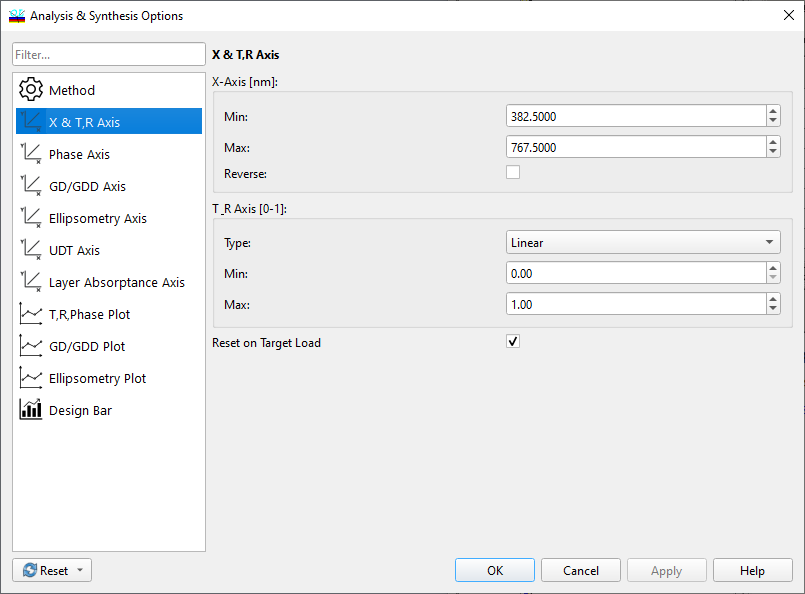
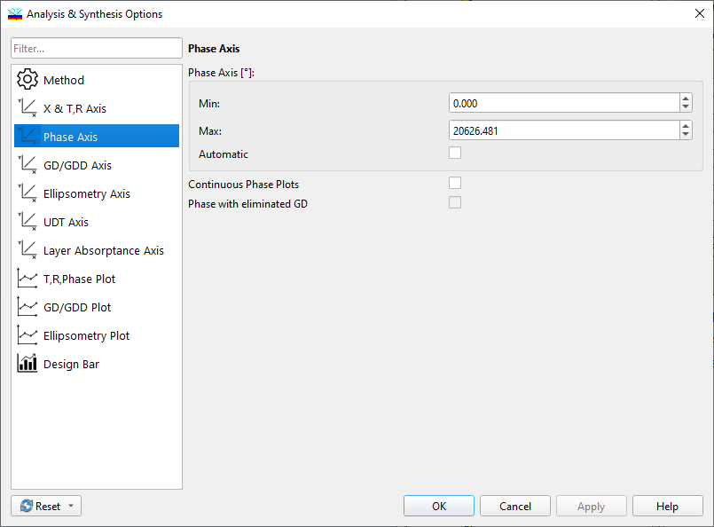
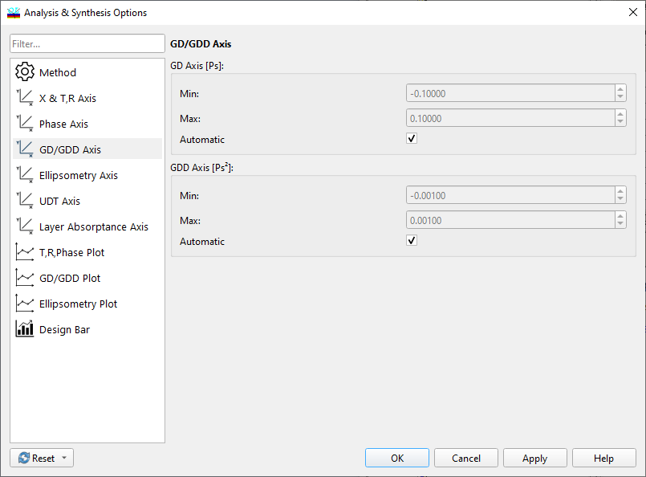
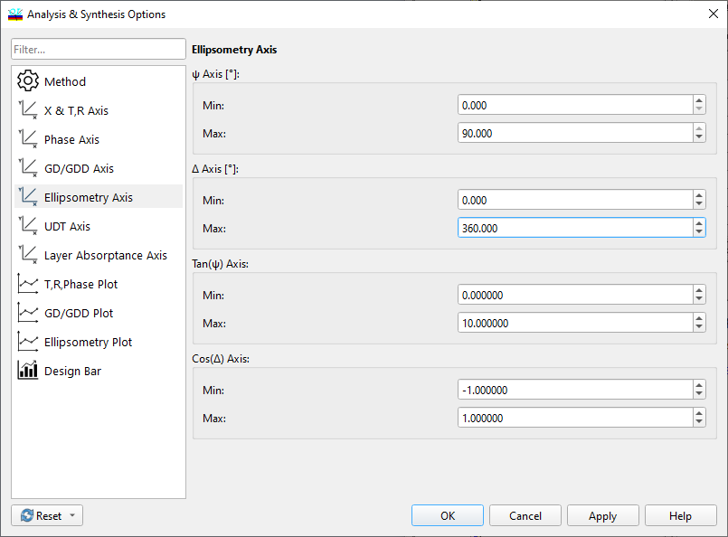
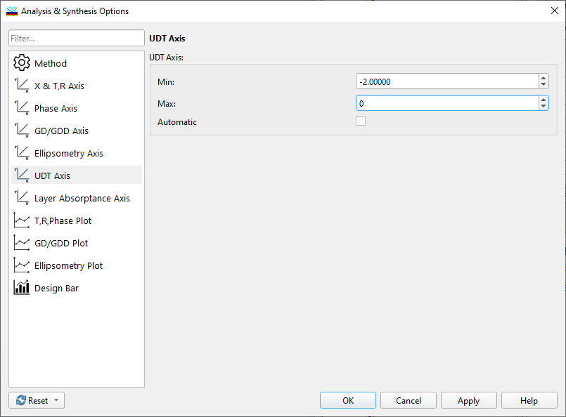
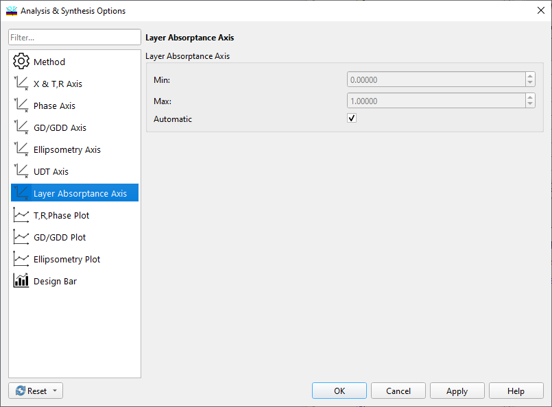

Adjusting Scales
Adjusting Scales
The Axis page of the Options dialog in the Analysis and Synthesis menus allows the user to change the format of the plots displayed on the screen.

Set the minimum and maximum spectral range limits using the X-axis controls. Units for these limits are defined in the Configuration/Options menu command. You can reverse the X-axis by checking the Reverse box.
Note that in the Angular mode, the X-axis corresponds to the angles of incidence, and X values are displayed in degrees.
Set display limits for the T & R axis using the corresponding window fields. You can switch between linear, logarithmic, and diabatic scales by clicking the appropriate button in the Type box. The diabatic scale is determined by the relation Y = 1 - log10(-log10(T)), and allows the representation of spectral characteristics in the ranges where T is close to 0 or 1 in more detail, as well as using an almost homogeneous scale in the T range of 0.2-0.8.
The “Reset on Target Load” option specifies whether it is necessary to set automatic scales, plot selection, and other parameters on each new target load.
The above picture shows only one possible dialog window for setting X and Y-axis scales. If your figure contains phase characteristics, select the Phase page, and set angle limits (default values are 0 and 360 degrees).
Automatic option sets auto-scaling mode. It is especially useful when the Continuous Phase Plots option is activated since OptiLayer tries to perform a phase unwrapping procedure when plotting the phase.


Note: Phase unwrapping is also performed during synthesis with phase targets if the Continuous Phase Plots option is enabled.
The page labeled GD & GDD is used to set plotting limits for Group Delay and Group Delay Dispersion. You can choose the default settings by checking the Automatic boxes on this page.

The Ellipsometry page allows the user to set limits for plotting ellipsometric angles Delta and Phi.

The UDT page allows users to change scales for UDT (User-Defined Targets) plots.

The Lay Abs page allows changing scales for the Layer Absorptance Evaluation window.

The Default button resets all values to their default settings. The default values are as follows: the spectral range of the X-axis is 20% wider than the spectral range of the target function loaded in memory, the range of the Y-axis is from 0 to 1, or from 0 to 100% depending on settings in the Configuration menu. If a target function has not been loaded, the default range of the X-axis is from 0.4 to 0.8 micrometers. See also: